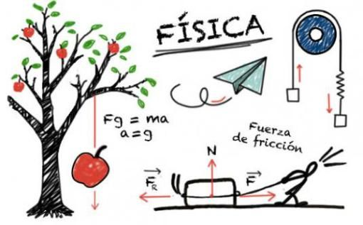

La programación informática es el arte del proceso por el cual se limpia, codifica, traza
y protege el código fuente de programas computacionales, en otras palabras, es indicarle
a la computadora lo que tiene que hacer. La programación informática es una de las habilidade
esenciales que aprendes cuando estudias informática. Detrás de todos los programas informáticos
que conocemos y usamos de manera cotidiana para facilitarnos diversas actividades de nuestro
día con día, existe todo un proceso para poderlos crear. Este proceso es conocido como
programación, conozcamos un poco más sobre lo que conlleva este proceso. Por medio de la programación
se establecen los pasos a seguir para la creación del código fuente de los diversos programas informáticos.
Este código le indicara al programa informático que tiene que hacer y como realizarlo.
La programación se guía por una serie de normas y un conjunto de órdenes, instrucciones
y expresiones que tienden a ser semejantes a una lengua natural acotada. Por lo cual recibe
el nombre de lenguaje de programación. Y así como en los idiomas también en la informática
existen diversos lenguajes de programación. Hablando de forma más técnica, la programación
se realiza mediante el uso de algoritmos, que se podrían explicar cómo reglas o instrucciones
que deben seguirse para resolver el problema y lograr el objetivo. Algunas de ellas pueden
agruparse y de ese modo recibir un nombre para tener la facilidad de ser invocadas con facilidad
tantas veces como sea necesario.
El cálculo diferencial es una rama de la matemática que permite resolver diversos problemas
donde el cambio de las variables se puede modelar en un continuo numérico para determinar,
a partir de ello, la variación de estos elementos en un instante o intervalo específico.
Al aplicarlo, es posible determinar el momento en que se da una tendencia al alza o a la
baja del mercado a partir de los datos del índice bursátil, determinar la velocidad máxima
que un vehículo puede alcanzar en una carretera, el comportamiento que puede mostrar a largo
plazo la concentración de una mezcla o predecir el número de horas-hombre necesarias para un
nivel de producción industrial; los anteriores son ejemplos de la amplia variedad de problemas
que pueden resolverse gracias a esta disciplina.
Sin embargo, para el surgimiento del cálculo diferencial, la humanidad tuvo que recorrer un
camino largo y tortuoso para dilucidar claramente las ideas que llevaron a la generación de los
conceptos que permitieron su nacimiento. A continuación, se realiza un breve recorrido por sus orígenes.
Con la aritmética, geometría, álgebra y geometría analítica, las sociedades más avanzadas han
logrado resolver la mayoría de sus enigmas matemáticos; sin embargo, existen algunos problemas
prácticos que no pueden resolverse completamente con estos recursos. La falta de consistencia y
generalidad en las soluciones encontradas hasta entonces para esos problemas obliga a una revisión
del cimiento matemático.

La física es una de las disciplinas académicas más antiguas, cuyas raíces se remontan
a los inicios de la civilización, cuando el hombre empezó a tratar de entender las fuerzas
que regían el mundo a su alrededor.
Se trata de una disciplina tanto teórica (describe las leyes del universo) como experimental
(pone en práctica de hipótesis respecto a dichas leyes), y se adhiere al modelo de comprobación
y legitimación impulsado por el método científico. Es una de las ciencias fundamentales o
centrales que existen, y dentro de su campo de estudio convergen a menudo la química, la biología y la electrónica, entre otras.
Inicialmente la física formaba parte, como tantas otras ciencias, de la filosofía o la filosofía
natural de la antigüedad, pero a partir de la Revolución Científica del siglo XVII surgió como un
campo independiente, interesado en las leyes fundamentales de la realidad y empleando el lenguaje
formal de las matemáticas para expresarlas. En la actualidad, en cambio, la física es una de las
disciplinas que más contribuye con el cambio del paradigma científico, industrial y tecnológico.
La física como la conocemos hoy se describe mediante cuatro marcos teóricos que dependen del tamaño de la materia en estudio y de la velocidad de su movimiento